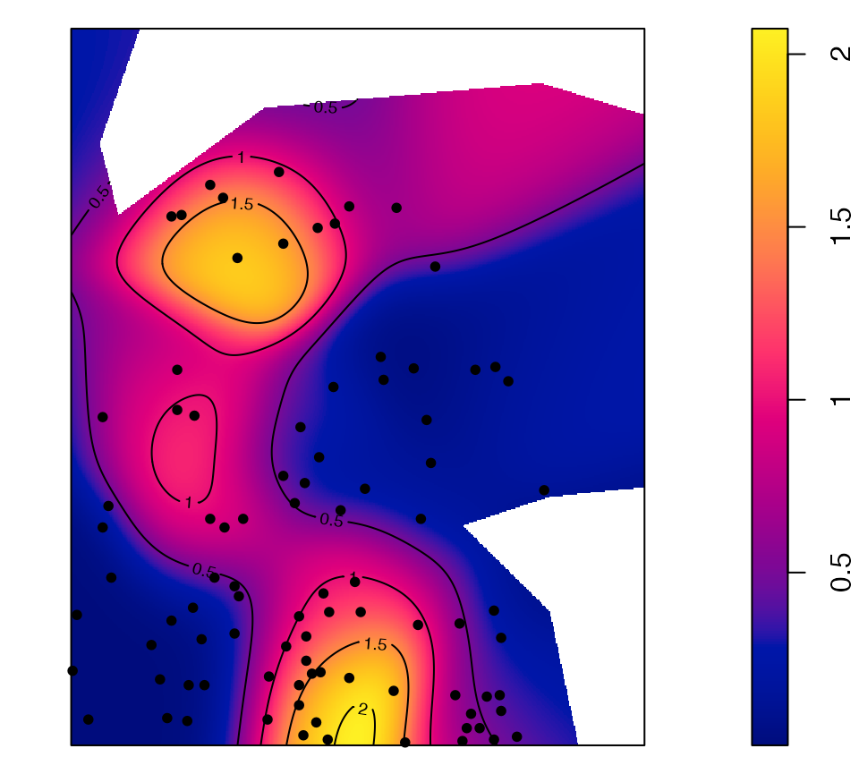

The dbmss package allows simple computation of spatial statistic functions of distance to characterize the spatial structures of mapped objects, including classical ones (Ripley’s K and others) and more recent ones used by spatial economists (Duranton and Overman’s , Marcon and Puech’s ). It relies on spatstat for some core calculation.
This vignette contains a quick introduction.
Data
The main data format is wmppp for weighted, marked point
pattern. It inherits from the ppp class of the
spatstat package.
A wmppp object can be created from the coordinates of
points, their type and their weight.
library("dbmss")
# Draw the coordinates of 10 points
X <- runif(10)
Y <- runif(10)
# Draw the point types.
PointType <- sample(c("A", "B"), size = 10, replace = TRUE)
# Plot the point pattern. Weights are set to 1 ant the window is adjusted
autoplot(wmppp(data.frame(X, Y, PointType)))
An example dataset is provided: it is a point pattern from the Paracou forest in French Guiana. Two species of trees are identified, other trees are of type “Other”. Point weights are their basal area, in square centimeters.
# Plot (second column of marks is Point Types)
autoplot(
paracou16,
labelSize = expression("Basal area (" ~cm^2~ ")"),
labelColor = "Species"
)
Main functions
The main functions of the package are designed to calculate distance-based measures of spatial structure. Those are non-parametric statistics able to summarize and test the spatial distribution (concentration, dispersion) of points.
The classical, topographic functions such as Ripley’s K are provided by the spatstat package and supported by dbmss for convenience.
Relative functions are available in dbmss only. These are the and and functions.
The bivariate function can be calculated for Q. Rosea trees around V. Americana trees:

Confidence envelopes
Confidence envelopes of various null hypotheses can be calculated. The univariate distribution of Q. Rosea is tested against the null hypothesis of random location.
autoplot(
KdEnvelope(paracou16, ReferenceType = "Q. Rosea", Global = TRUE),
main = ""
)
Significant concentration is detected between about 10 and 20 meters.
Maps
Individual values of some distance-based measures can be computed and mapped.
# Calculate individual intertype M(distance) value
ReferenceType <- "V. Americana"
NeighborType <- "Q. Rosea"
fvind <- Mhat(
paracou16,
r = c(0, 30),
ReferenceType = ReferenceType,
NeighborType = NeighborType,
Individual = TRUE
)
# Plot the point pattern with values of M(30 meters)
p16_map <- Smooth(
paracou16,
fvind = fvind,
distance = 30,
# Resolution
Nbx = 512,
Nby = 512
)
par(mar = rep(0, 4))
plot(p16_map, main = "")
# Add the reference points to the plot
is.ReferenceType <- marks(paracou16)$PointType == ReferenceType
points(
x = paracou16$x[is.ReferenceType],
y = paracou16$y[is.ReferenceType],
pch = 20
)
# Add contour lines
contour(p16_map, nlevels = 5, add = TRUE)